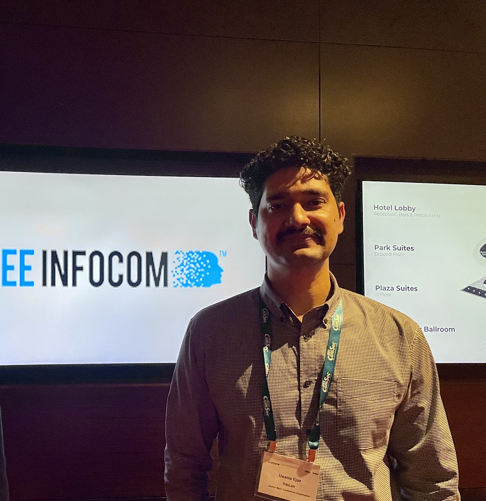

I am a Ph.D candidate at the Network Data Science Lab (NDSlab), Sangmyung University, advised by Prof. Hyun-chul Kim. My research is in Internet measurement, where I work on uncovering the AS-level topology that remains hidden from current measurement infrastructure. I also work on applied machine learning problems in computer vision and explainable AI.
Conference Papers
Journal Papers
Sponsored by National Security Research Institute, Korea. PI. June 2023 – Oct 2023.
Sponsored by National Security Research Institute, Korea. PI. April 2022 – Oct 2022.
Email: usamaijaz404 — at — gmail.com
Lab: NDSlab, C-building 404C
Address: Dept. of Software, Sangmyung University,
31 Sangmyung University Road, Dong-nam-gu, Cheonan, South Korea